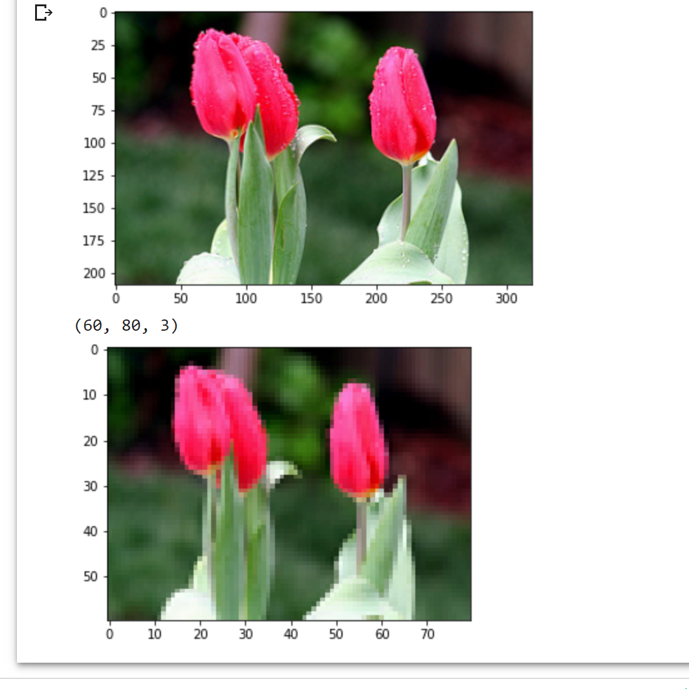

Image Down Scaler
Created an image downscaler to down scale an image set used for a DCGAN project.
This project was actually a component of my Deep Convolutional Generative Adversarial Network for my Advanced Concepts in Game Dev class. This component takes batches of image files, no matter the size, and reduces them to 60x60x3 (width, height, channels). These new images were then fed into the DCGAN to be convolved over to make predictions about the image as well as create "deep fake" iterations of each image.
Technologies Used
- Python
- PyTorch
- MatPlotLib / NumPy
- Google Colab